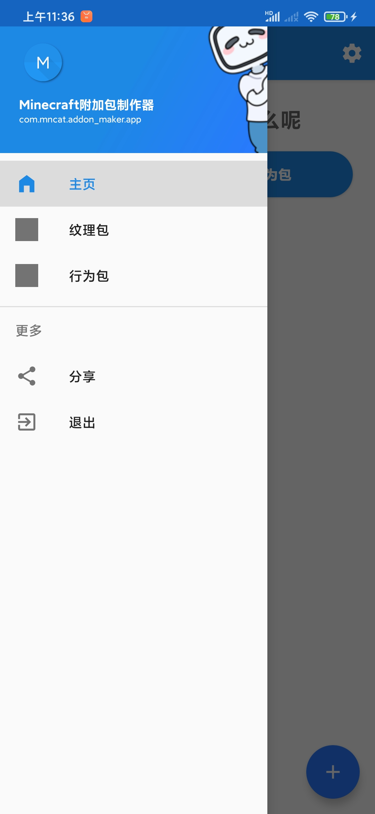
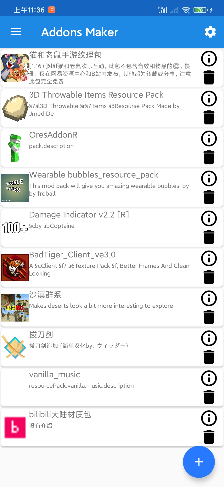
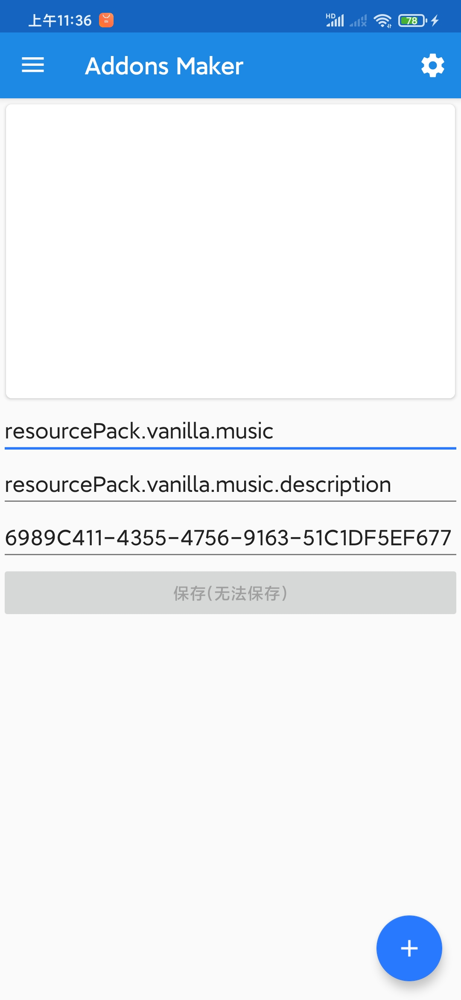

Mncat Add-on Maker
主页
日志
关于
Mncat Addon Maker
刷新页面
Alpha 0.0.2
本版本仅仅修复bug
如果发现软件有启动图，但过一会后闪退了，请检查是否给予读写权限(应该设置为始终允许)，如果设置后还是如此，可能是因为没有适配安卓版本。
下载测试
Alpha 0.0.1
注:本版本没有功能，只能查看manifest.json内header的包名字、包介绍、包uuid和纹理包的包图片，行为包的包图片。
如果发现软件有启动图，但过一会后闪退了，请检查是否给予读写权限(应该设置为始终允许)，如果设置后还是如此，可能是因为没有适配安卓版本。
下载测试
  
Alpha 0.0.1应用截屏
本网站用到了mdl设计，网站
https://getmdl.io/